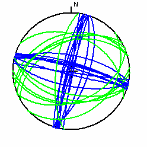
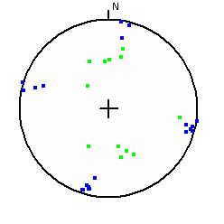
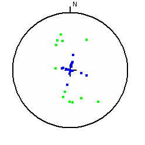

If you select a group of faults in an area, you can see the similarities in their orientations on the stereonet.
Earthquake Focal Mechanisms Option on Stats button of on table display window.
|
 |
Focal planes on stereonet. There are earthquakes produced from normal and strike slip faults, each with two focal planes.
|
|
 |
Poles to focal planes. The pole is the line normal/perpendicular to the plane, which plots as a point on the stereonet.
|
|
 |
Dp directions for focal planes. The dip
direction lies on the plane (90 degrees from the
strike), so the line will
plot as a point on the great circle.
This diagram can be used to set limits for looking for fault scarps in digital topography. |
Earthquake Focal Mechanisms Option on Stats button of on table display window.
Last revision 11/28/2015